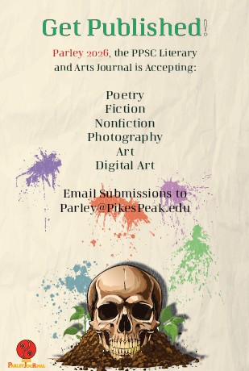
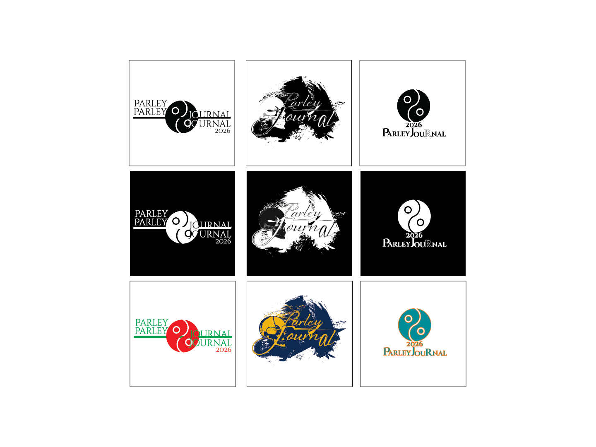

Publication Design
Parley Submission
This project was created for Parley 2026, the PPSC Literary and Arts Journal. The design focuses on mood, contrast, readability, and balanced composition.

Purpose
The goal was to create a publication concept that felt visually strong while still remaining readable and organized.
Dark tones, muted colors, and layered composition were used to create an aged cinematic atmosphere while maintaining strong visual hierarchy.
The layout balances typography, spacing, and imagery to support the overall concept and user experience.

P.O.P. Method
- Purpose: Create a publication design that communicates mood, atmosphere, and identity.
- Objective: Use hierarchy, muted tones, imagery, and contrast to create a refined visual system.
- Process: Experiment with typography, composition, and image placement while revising based on readability and visual balance.